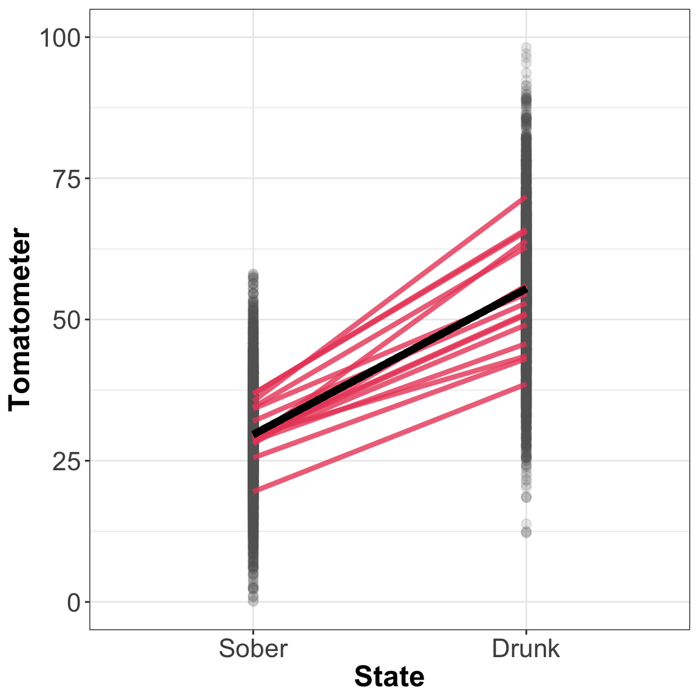

Mixed Models
|
Statistics with R Basel R Bootcamp |

|

from rottentomatoes.com
Overview
In this practical you’ll practice “mixed effects modeling” with the lme4, sjstats, stats, and pbkrtest packages.
By the end of this practical you will know how to:
- Run mixed effects models in R.
- Extract p-values for fixed effects.
- Select the appropriate random effects structure.
- Specify crossed vs. nested random effects.
- Extract variance components and compute the explained variance and intra-class correlation
- Visualize your linear mixed effects model.
- Run a generalized mixed effects model.
Tasks
A - Setup
- Open your
BaselRBootcampR project. It should already have the folders1_Dataand2_Code. Make sure that the data files listed in theDatasetssection above are in your1_Datafolder
# Done!- Open a new R script. At the top of the script, using comments, write your name and the date. Save it as a new file called
MixedModels_practical.Rin the2_Codefolder.
# Done!- Using
library()load thetidyverse,lme4, andsjstatspackages (if you don’t have them, you’ll need to install them withinstall.packages())!
# Load packages necessary for this script
library(tidyverse)
library(lme4)
library(sjstats)- Using the following template, load the
tomatometer.csvandschools.csvdata into R and store it as a new object calledtomandschools, respectively (Hint: Don’t type the path directly! Use the “tab” completion!).
# Load tomatometer.csv from the 1_Data folder
XX <- read_csv(file = "XX/XX")
# Load school.csv from the 1_Data folder
XX <- read_csv(file = "XX/XX")# Load tomatometer.csv from the 1_Data folder
tom <- read_csv(file = "1_Data/tomatometer.csv")Parsed with column specification:
cols(
ID = col_double(),
Movie = col_character(),
State = col_character(),
Tomatometer = col_double()
)# Load school.csv from the 1_Data folder
schools <- read_csv(file = "1_Data/schools.csv")Parsed with column specification:
cols(
id = col_double(),
extra = col_double(),
open = col_double(),
agree = col_double(),
social = col_double(),
class = col_character(),
school = col_character()
)- Take a look at the first few rows of the datasets by printing them to the console.
# Print the object(s)
XXX
XXX# Print the tom object
tom# A tibble: 5,995 x 4
ID Movie State Tomatometer
<dbl> <chr> <chr> <dbl>
1 1 M1 Sober 28.3
2 1 M2 Sober 27.5
3 1 M3 Sober 11.5
4 1 M4 Sober 17.2
5 1 M5 Sober 31.0
6 1 M6 Sober 36.1
7 1 M7 Sober 31.1
8 1 M8 Sober 32.7
9 1 M9 Sober 44.1
10 1 M10 Sober 22.6
# … with 5,985 more rowsschools# A tibble: 1,200 x 7
id extra open agree social class school
<dbl> <dbl> <dbl> <dbl> <dbl> <chr> <chr>
1 1 63.7 43.4 38.0 75.1 d IV
2 2 69.5 46.9 31.5 98.1 a VI
3 3 79.7 32.3 40.2 116. d VI
4 4 63.0 44.4 30.5 90.5 c IV
5 5 64.2 36.9 37.4 98.5 d IV
6 6 51.0 46.3 38.8 75.2 d I
7 7 60.1 37.0 38.6 95.9 d III
8 8 64.2 42.2 34.9 91.5 d IV
9 9 56.7 32.8 31.7 115. a III
10 10 47.2 44.3 25.0 123. b I
# … with 1,190 more rows- Use the the
summary()function to print more details on the columns of the datasets.
summary(XXX)
summary(XXX)summary(tom) ID Movie State Tomatometer
Min. : 1.0 Length:5995 Length:5995 Min. : 0.0
1st Qu.: 50.5 Class :character Class :character 1st Qu.:29.1
Median :100.0 Mode :character Mode :character Median :40.6
Mean :100.5 Mean :42.5
3rd Qu.:150.5 3rd Qu.:55.4
Max. :200.0 Max. :98.1 summary(schools) id extra open agree
Min. : 1 Min. :30.2 Min. :22.3 Min. :18.5
1st Qu.: 301 1st Qu.:54.2 1st Qu.:36.2 1st Qu.:31.9
Median : 600 Median :60.2 Median :40.0 Median :35.1
Mean : 600 Mean :60.3 Mean :40.1 Mean :35.1
3rd Qu.: 900 3rd Qu.:66.5 3rd Qu.:43.9 3rd Qu.:38.4
Max. :1200 Max. :90.8 Max. :57.9 Max. :58.4
social class school
Min. : 46.3 Length:1200 Length:1200
1st Qu.: 89.3 Class :character Class :character
Median : 99.2 Mode :character Mode :character
Mean : 99.5
3rd Qu.:109.8
Max. :152.0 - Use the
View()function to view the entire dataframe(s) in a new window.
View(XXX)
View(XXX)View(tom)
View(schools)B - Running a Linear Mixed Effects Model
In the first part of this practical we will work with the tom data example from the slides and test the effect of a person’s State (“Sober” vs. “Drunk”) on his or her Tomatometer rating.
- Run fixed effects only model predicting
TomatometerwithStateand save the result asFE_mod. Then inspect the results.
# Use lm, as lmer only works if at least one random effect is specified
FE_mod <- glm(formula = XXX ~ XXX,
data = XXX)
# Inspect the results
summary(XXX)# Use lm, as lmer only works if at least one random effect is specified
FE_mod <- glm(formula = Tomatometer ~ State,
data = tom)
# look at the resuts
summary(FE_mod)
Call:
glm(formula = Tomatometer ~ State, data = tom)
Deviance Residuals:
Min 1Q Median 3Q Max
-43.26 -7.61 -0.03 7.65 42.71
Coefficients:
Estimate Std. Error t value Pr(>|t|)
(Intercept) 55.443 0.212 261 <2e-16 ***
StateSober -25.806 0.300 -86 <2e-16 ***
---
Signif. codes: 0 '***' 0.001 '**' 0.01 '*' 0.05 '.' 0.1 ' ' 1
(Dispersion parameter for gaussian family taken to be 135)
Null deviance: 1806949 on 5994 degrees of freedom
Residual deviance: 808883 on 5993 degrees of freedom
AIC: 46423
Number of Fisher Scoring iterations: 2- Currently “Drunk” is taken as base state, so the intercept shows the mean at state “Drunk” and the slope shows how much lower the ratings in
State == "Sober"are. To obtain a more intuitive model with “Sober” as the base level, coerce theStatevariable into a factor and set the levels. Do this by running the following code.
# Coerce the State variable into a factor
tom <- tom %>%
mutate(State = factor(State, levels = c("Sober", "Drunk")))- Now rerun your model from task B1.
# Use lm, as lmer only works if at least one random effect is specified
FE_mod <- glm(formula = Tomatometer ~ State,
data = tom)
# look at the resuts
summary(FE_mod)
Call:
glm(formula = Tomatometer ~ State, data = tom)
Deviance Residuals:
Min 1Q Median 3Q Max
-43.26 -7.61 -0.03 7.65 42.71
Coefficients:
Estimate Std. Error t value Pr(>|t|)
(Intercept) 29.637 0.212 140 <2e-16 ***
StateDrunk 25.806 0.300 86 <2e-16 ***
---
Signif. codes: 0 '***' 0.001 '**' 0.01 '*' 0.05 '.' 0.1 ' ' 1
(Dispersion parameter for gaussian family taken to be 135)
Null deviance: 1806949 on 5994 degrees of freedom
Residual deviance: 808883 on 5993 degrees of freedom
AIC: 46423
Number of Fisher Scoring iterations: 2Compare the model output of B3 with the one you obtained in B1. How did the coefficients change? Why?
Now run a model with by-subjects random intercepts (subjects identifiers are stored in the
IDvariable). Hint: Random effects are specified in parenthesis in the formula in the following way(design_matrix|grouping_variable). Note: TheREML = FALSEin the model specification tells R to fit the model using maximum likelihood (ML), rather than restricted maximal likelihood (REML; for more information on this in a technical approach see here and here, for a less technical approach see here). This will later be important for certain model comparisons that only work if the model was fitted using ML.
# Mixed effects model with by-subject random intercepts
subj_RI_mod <- lmer(formula = XXX ~ XXX + # These are the fixed effects
(1|XXX), # These are the random effects
data = XXX, # Specify the data used
REML = FALSE)# Mixed effects model with by-subject random intercepts
subj_RI_mod <- lmer(formula = Tomatometer ~ State + # These are the fixed effects
(1|ID), # These are the random effects
data = tom, # Specify the data used
REML = FALSE)- Using
summary(), inspect the results of the mixed effects model.
summary(subj_RI_mod)Linear mixed model fit by maximum likelihood ['lmerMod']
Formula: Tomatometer ~ State + (1 | ID)
Data: tom
AIC BIC logLik deviance df.resid
45279 45305 -22635 45271 5991
Scaled residuals:
Min 1Q Median 3Q Max
-3.670 -0.662 0.005 0.667 4.014
Random effects:
Groups Name Variance Std.Dev.
ID (Intercept) 31.8 5.64
Residual 103.1 10.15
Number of obs: 5995, groups: ID, 200
Fixed effects:
Estimate Std. Error t value
(Intercept) 29.634 0.440 67.3
StateDrunk 25.815 0.262 98.4
Correlation of Fixed Effects:
(Intr)
StateDrunk -0.298summary(FE_mod)
Call:
glm(formula = Tomatometer ~ State, data = tom)
Deviance Residuals:
Min 1Q Median 3Q Max
-43.26 -7.61 -0.03 7.65 42.71
Coefficients:
Estimate Std. Error t value Pr(>|t|)
(Intercept) 29.637 0.212 140 <2e-16 ***
StateDrunk 25.806 0.300 86 <2e-16 ***
---
Signif. codes: 0 '***' 0.001 '**' 0.01 '*' 0.05 '.' 0.1 ' ' 1
(Dispersion parameter for gaussian family taken to be 135)
Null deviance: 1806949 on 5994 degrees of freedom
Residual deviance: 808883 on 5993 degrees of freedom
AIC: 46423
Number of Fisher Scoring iterations: 2- Did the effect of
Statechange, now that you incorporated the random effects? Can you find out what did change from the model outputs?
# While the estimates of the fixed effects did not change, the t-values did change
# substantially (the t-value for StateDrunk in FE_mod is lower than the one in
# subj_RI_mod, and the one for the intercept dropped by 50%).- Sometimes it is useful to extract the estimates from the model output (e.g., so we don’t have to manually type them, which would be error prone). Extract the fixed effects from
subj_RI_modusing thefixef()function.
# Print fixed effects from subj_RI_mod
fixef(XXX)fixef(subj_RI_mod)(Intercept) StateDrunk
29.6 25.8 - Now extract the random effects from
subj_RI_modusing theranef()function.
# Print random effects from subj_RI_mod
ranef(XXX)# Print random effects from subj_RI_mod
ranef(subj_RI_mod)$ID
(Intercept)
1 -3.72667
2 -2.70725
3 -9.30260
4 9.34072
5 0.53670
6 -10.29137
7 -6.84484
8 3.88843
9 0.34551
10 2.71830
11 2.13535
12 8.48446
13 -10.96901
14 6.26632
15 -6.61537
16 -6.12848
17 1.48922
18 6.63510
19 -9.08709
20 -7.72281
21 2.43045
22 3.40350
23 2.74789
24 -5.33134
25 0.16750
26 2.68319
27 -4.58569
28 6.68480
29 -5.98544
30 1.80638
31 -5.51928
32 -5.85655
33 1.01406
34 -0.88831
35 -2.69176
36 2.52656
37 -2.00271
38 3.57485
39 -5.52901
40 -3.45215
41 4.54121
42 -10.03567
43 5.07659
44 -2.44412
45 -5.86155
46 11.14202
47 -1.91923
48 1.73472
49 0.25704
50 -4.65665
51 -9.76560
52 -3.26407
53 0.13204
54 -3.51976
55 -4.09580
56 4.27692
57 -2.98161
58 -1.51631
59 10.44240
60 -4.56785
61 4.67294
62 -4.90100
63 8.46020
64 6.64420
65 -4.24220
66 -1.58203
67 -4.55004
68 2.48010
69 -1.20119
70 1.00701
71 6.57440
72 -4.93223
73 -3.91590
74 3.65264
75 -1.82554
76 2.50970
77 -2.43900
78 -0.34239
79 0.96237
80 -4.56023
81 2.59965
82 -2.98027
83 -2.23420
84 -2.35557
85 -3.98495
86 6.09909
87 2.03265
88 -0.16937
89 5.94204
90 -1.14358
91 2.58765
92 0.87057
93 8.42346
94 -2.20985
95 2.06736
96 12.15186
97 7.10375
98 0.35536
99 7.60744
100 -12.25240
101 -8.94774
102 -5.53636
103 8.16086
104 2.72944
105 -3.24956
106 -2.67552
107 9.08858
108 9.66545
109 -2.83804
110 6.13601
111 6.86645
112 -5.61401
113 -2.28125
114 0.34448
115 0.41903
116 -8.49295
117 -2.87699
118 1.37610
119 5.49082
120 3.15692
121 14.25065
122 -1.08276
123 2.39225
124 -2.88023
125 0.96372
126 -9.49349
127 1.53127
128 0.55844
129 3.10027
130 6.52566
131 -1.27722
132 -3.75534
133 -3.78681
134 -12.96350
135 4.21634
136 0.00956
137 -5.24179
138 -7.55851
139 5.66366
140 -1.44616
141 -7.79828
142 0.10655
143 -7.51961
144 16.93483
145 6.49490
146 -4.23681
147 7.16867
148 -0.82098
149 -1.32887
150 0.95348
151 -4.09563
152 4.41867
153 -4.01217
154 -0.37468
155 0.77177
156 -5.56181
157 -1.84094
158 8.57867
159 -0.62826
160 0.34012
161 5.15346
162 -4.89625
163 1.04244
164 4.08565
165 -1.41477
166 -3.89184
167 3.92631
168 7.13471
169 6.76708
170 0.80036
171 0.77873
172 3.37548
173 -2.07455
174 6.98781
175 -1.37140
176 5.88747
177 3.24726
178 -2.03141
179 5.09084
180 -5.30449
181 0.17091
182 1.14726
183 -0.25429
184 4.67817
185 -1.39411
186 0.96866
187 -5.14298
188 -0.60384
189 4.03981
190 0.26823
191 -5.37581
192 -8.78411
193 -11.40835
194 6.90097
195 4.83762
196 -4.47838
197 -5.63746
198 -3.13302
199 -0.39908
200 12.51086
with conditional variances for "ID" - Expand your mixed effects model from task B4 by adding by-subjects slopes. Hint: add the
Statevariable to the left side of the bar|in the random effects part of the formula.
# Mixed effects model with by-subject random intercepts and slopes
subj_RI_RS_mod <- lmer(formula = XXX ~ XXX + # These are the fixed effects
(XXX|XXX), # These are the random effects
data = XXX, # Specify the data used
REML = FALSE)# Mixed effects model with by-subject random intercepts and slopes
subj_RI_RS_mod <- lmer(formula = Tomatometer ~ State + # These are the fixed effects
(State|ID), # These are the random effects
data = tom, # Specify the data used
REML = FALSE)- Compare the outputs of the fixed effects only model, of the by-subjects random intercepts model, and of the by-subjects random intercepts and slopes model. Do this by applying the
summary()function to each of the objects. Did the coefficients change? Why not? What did change?
summary(subj_RI_RS_mod)Linear mixed model fit by maximum likelihood ['lmerMod']
Formula: Tomatometer ~ State + (State | ID)
Data: tom
AIC BIC logLik deviance df.resid
44906 44947 -22447 44894 5989
Scaled residuals:
Min 1Q Median 3Q Max
-3.539 -0.659 0.020 0.669 3.977
Random effects:
Groups Name Variance Std.Dev. Corr
ID (Intercept) 16.6 4.07
StateDrunk 37.0 6.08 0.26
Residual 93.5 9.67
Number of obs: 5995, groups: ID, 200
Fixed effects:
Estimate Std. Error t value
(Intercept) 29.635 0.338 87.8
StateDrunk 25.818 0.498 51.9
Correlation of Fixed Effects:
(Intr)
StateDrunk 0.004 summary(subj_RI_mod)Linear mixed model fit by maximum likelihood ['lmerMod']
Formula: Tomatometer ~ State + (1 | ID)
Data: tom
AIC BIC logLik deviance df.resid
45279 45305 -22635 45271 5991
Scaled residuals:
Min 1Q Median 3Q Max
-3.670 -0.662 0.005 0.667 4.014
Random effects:
Groups Name Variance Std.Dev.
ID (Intercept) 31.8 5.64
Residual 103.1 10.15
Number of obs: 5995, groups: ID, 200
Fixed effects:
Estimate Std. Error t value
(Intercept) 29.634 0.440 67.3
StateDrunk 25.815 0.262 98.4
Correlation of Fixed Effects:
(Intr)
StateDrunk -0.298summary(FE_mod)
Call:
glm(formula = Tomatometer ~ State, data = tom)
Deviance Residuals:
Min 1Q Median 3Q Max
-43.26 -7.61 -0.03 7.65 42.71
Coefficients:
Estimate Std. Error t value Pr(>|t|)
(Intercept) 29.637 0.212 140 <2e-16 ***
StateDrunk 25.806 0.300 86 <2e-16 ***
---
Signif. codes: 0 '***' 0.001 '**' 0.01 '*' 0.05 '.' 0.1 ' ' 1
(Dispersion parameter for gaussian family taken to be 135)
Null deviance: 1806949 on 5994 degrees of freedom
Residual deviance: 808883 on 5993 degrees of freedom
AIC: 46423
Number of Fisher Scoring iterations: 2# For FE_mod and subj_RI_mod the answer is the same as in task B5. The coefficients
# again didn't change, as the group means obviously also didn't change. But again
# the t-values changed considerably (e.g. the StateDrunk t-value in subj_RI_mod
# is 98.31, the on in subj_RI_RS_mod is 51.81).- Each movie was rated in both states, so there is also a repetition in the items, which again leads to a violation of the independence assumption. To account for this, expand the model from task B9 by adding by-movie random intercepts and slopes. Note: The additional argument specifies a different optimizer such that the model converges.
# Mixed effects model with by-subject and by-movie random intercepts and slopes
max_mod <- lmer(formula = XXX ~ XXX + # These are the fixed effects
(XXX|XXX) + (XXX|XXX), # These are the random effects
data = XXX, # Specify the data used
REML = FALSE,
control = lmerControl(optimizer = "bobyqa")) # use a different optimizer
# to avoid non convergence# Mixed effects model with by-subject and by-movie random intercepts and slopes
max_mod <- lmer(formula = Tomatometer ~ State + # These are the fixed effects
(State|ID) + (State|Movie), # These are the random effects
data = tom, # Specify the data used
REML = FALSE,
control = lmerControl(optimizer = "bobyqa")) # use a different optimizer
# to avoid non convergence- The
converge_ok()function from thesjstatspackage let’s you check whether the model converged or not. If the functions returnsTRUEyou’re good. Test whethermax_modconverged.
converge_ok(max_mod)1.35601713944997e-06
TRUE max_modis now the maximal model justified by the design. What does this mean? Why is it a good thing to specify this model?
# It means you specified all the possible random effects, including their correlations.
# Barr and colleagues found that Type I error rates are inflated in case of failure to
# specify the maximal structure. The results of the next task indeed confirm this. However,
# there is a tradeoff, as we will learn later on.- Compare the results with those of the earlier models by looking at their summary outputs using
summary().
summary(max_mod)Linear mixed model fit by maximum likelihood ['lmerMod']
Formula: Tomatometer ~ State + (State | ID) + (State | Movie)
Data: tom
Control: lmerControl(optimizer = "bobyqa")
AIC BIC logLik deviance df.resid
41815 41876 -20899 41797 5986
Scaled residuals:
Min 1Q Median 3Q Max
-3.656 -0.666 0.004 0.676 4.322
Random effects:
Groups Name Variance Std.Dev. Corr
ID (Intercept) 19.4 4.40
StateDrunk 42.9 6.55 0.13
Movie (Intercept) 24.9 4.99
StateDrunk 29.9 5.47 -0.05
Residual 52.5 7.24
Number of obs: 5995, groups: ID, 200; Movie, 15
Fixed effects:
Estimate Std. Error t value
(Intercept) 29.63 1.33 22.2
StateDrunk 25.83 1.50 17.2
Correlation of Fixed Effects:
(Intr)
StateDrunk -0.042summary(subj_RI_RS_mod)Linear mixed model fit by maximum likelihood ['lmerMod']
Formula: Tomatometer ~ State + (State | ID)
Data: tom
AIC BIC logLik deviance df.resid
44906 44947 -22447 44894 5989
Scaled residuals:
Min 1Q Median 3Q Max
-3.539 -0.659 0.020 0.669 3.977
Random effects:
Groups Name Variance Std.Dev. Corr
ID (Intercept) 16.6 4.07
StateDrunk 37.0 6.08 0.26
Residual 93.5 9.67
Number of obs: 5995, groups: ID, 200
Fixed effects:
Estimate Std. Error t value
(Intercept) 29.635 0.338 87.8
StateDrunk 25.818 0.498 51.9
Correlation of Fixed Effects:
(Intr)
StateDrunk 0.004 summary(subj_RI_mod)Linear mixed model fit by maximum likelihood ['lmerMod']
Formula: Tomatometer ~ State + (1 | ID)
Data: tom
AIC BIC logLik deviance df.resid
45279 45305 -22635 45271 5991
Scaled residuals:
Min 1Q Median 3Q Max
-3.670 -0.662 0.005 0.667 4.014
Random effects:
Groups Name Variance Std.Dev.
ID (Intercept) 31.8 5.64
Residual 103.1 10.15
Number of obs: 5995, groups: ID, 200
Fixed effects:
Estimate Std. Error t value
(Intercept) 29.634 0.440 67.3
StateDrunk 25.815 0.262 98.4
Correlation of Fixed Effects:
(Intr)
StateDrunk -0.298summary(FE_mod)
Call:
glm(formula = Tomatometer ~ State, data = tom)
Deviance Residuals:
Min 1Q Median 3Q Max
-43.26 -7.61 -0.03 7.65 42.71
Coefficients:
Estimate Std. Error t value Pr(>|t|)
(Intercept) 29.637 0.212 140 <2e-16 ***
StateDrunk 25.806 0.300 86 <2e-16 ***
---
Signif. codes: 0 '***' 0.001 '**' 0.01 '*' 0.05 '.' 0.1 ' ' 1
(Dispersion parameter for gaussian family taken to be 135)
Null deviance: 1806949 on 5994 degrees of freedom
Residual deviance: 808883 on 5993 degrees of freedom
AIC: 46423
Number of Fisher Scoring iterations: 2- What changed with the increasingly complex random effects structure?
# The t-value for the State effect changed dramatically. Now it is "only" 17.28.
# While still substantial, this illustrates the point Barr et al. 2013 make in their
# paper where they argue that for confirmatory hypothesis testing one should always
# specify the maximal random effects structure justified by the design, as otherwise
# the Type I error rate is inflated (i.e., the fixed effects are too often classified
# as being significant, even though they are in truth not related to the outcome
# variable).C - \(R^2\)
When fitting statistical models, we are often interested in how much systematic variation they can capture. In linear (mixed effects) models this is the \(R^2\) value (the coefficient of determination); for generalized (mixed effects) models, we can compute pseudo \(R^2\) values.
- We will use the
r2()function from thesjstatspackage to compute \(R^2\) values. Look at the help menu of the function to get an overview of what models you can use it for.
?r2- Compute the \(R^2\) of the maximal model.
r2(max_mod)
R-Squared for (Generalized) Linear (Mixed) Model
Family : gaussian (identity)
Formula: list(~State | ID, ~State | Movie) Tomatometer ~ State NA
Marginal R2: 0.552
Conditional R2: 0.826- What does the output of the last task mean? What is the marginal \(R^2\) and what is the conditional \(R^2\)?
# The marginal r-squared only considers the variance of the fixed effects. In this
# case this means that the fixed in our maximal model can account for 55% of the variation
# in the data.
# The conditional r-squared takes both the fixed and random effects into account. Our maximal
# model can thus account for 83% of the variance in the data.- Compare the \(R^2\) values of
max_modwith those of less complex models. Are the changes large? Which \(R^2\) values changed?
r2(max_mod)
R-Squared for (Generalized) Linear (Mixed) Model
Family : gaussian (identity)
Formula: list(~State | ID, ~State | Movie) Tomatometer ~ State NA
Marginal R2: 0.552
Conditional R2: 0.826r2(subj_RI_RS_mod)
R-Squared for (Generalized) Linear (Mixed) Model
Family : gaussian (identity)
Formula: ~State | ID Tomatometer ~ State NA
Marginal R2: 0.552
Conditional R2: 0.690r2(subj_RI_mod)
R-Squared for (Generalized) Linear (Mixed) Model
Family : gaussian (identity)
Formula: ~1 | ID Tomatometer ~ State NA
Marginal R2: 0.553
Conditional R2: 0.658D - Visualize Your Model
It is often useful to visualize your model’s output. Run the code below to extract coefficients from max_mod and plot the data along with a few sample lines to visualize the variability in the slopes and intercepts. As plotting is not the topic of this bootcamp we don’t have time to go into details here. If you are interested in learning more about plotting, there are many books and tutorials about it, and we also cover it in the R for Data Science bootcamp.
- Run the following code to visualize your
max_moddata.
# extract fixed effects
m_line <- fixef(max_mod)
# extract random effects
ranefs <- ranef(max_mod)
predicted <- tibble(
intercept = ranefs$ID[,1] + fixef(max_mod)[1],
slope = ranefs$ID[,2] + fixef(max_mod)[2])
# randomly draw 15 subjects to plot the fitted lines
rand15 <- sample(1:nrow(predicted), 15)
LMM_plot <- ggplot(tom, aes(State, Tomatometer)) +
geom_point(colour= "#606061", alpha = .15, size = 2.5)+
geom_segment(aes(x = 1, y = intercept, xend = 2, yend = intercept + slope),
data = predicted %>% slice(rand15), colour = "#EA4B68", size = 1.5,
alpha = .8) +
geom_segment(aes(x = 1, y = m_line[1], xend = 2, yend = sum(m_line)),
colour = "black", size = 2, alpha = 1) +
theme(axis.title.x = element_text(vjust = -1),
axis.title.y = element_text(vjust = 1)) +
theme_bw() +
ylim(0, 100) +
theme(
strip.text = element_text(size = 12, face = "bold"),
axis.text = element_text(size = 16),
axis.title = element_text(size = 18,face = "bold")
)
LMM_plot
E - Computing p-Values for Fixed Effects
As you probably noticed, the lmer() summary output does not include p-values. This is not because the authors of lme4 were lazy, but because how to best compute p-values for mixed effects models is a still ongoing discussion. However, several possibilities exist of how to test whether a variable is a significant predictor (i.e., a significant fixed effect). We will look at a couple of them.
Likelihood Ratio Test
One possibility to obtain p-values is by conducting a likelihood ratio test (LRT). In an LRT, the model is fitted once with and once without the fixed effect of interest, all else being equal. These two models are then compared in using the LRT. This test only works if the models were fit using maximum likelihood (ML) estimation, rather than restricted maximum likelihood (REML) estimation, which is why we used REML = FALSE when fitting the mixed effects models.
- First, fit an intercept only model (
IO_mod) where you predictTomatometerwith only the grand mean, and the by-subjects and by-movies random intercepts.
# Intercept only mixed effects model with by-subject and by-movie random intercepts
IO_mod <- lmer(formula = XXX ~ 1 + # There are no fixed effects so add 1 to fit the intercept
(1|XXX) + (1|XXX), # These are the random effects
data = XXX, # Specify the data used
REML = FALSE)# Intercept only mixed effects model with by-subject and by-movie random intercepts
IO_mod <- lmer(formula = Tomatometer ~ 1 + # There are no fixed effects so add 1 to fit the intercept
(1|ID) + (1|Movie), # These are the random effects
data = tom, # Specify the data used
REML = FALSE)- Look at the model output using
summary().
summary(IO_mod)Linear mixed model fit by maximum likelihood ['lmerMod']
Formula: Tomatometer ~ 1 + (1 | ID) + (1 | Movie)
Data: tom
AIC BIC logLik deviance df.resid
50332 50359 -25162 50324 5991
Scaled residuals:
Min 1Q Median 3Q Max
-2.416 -0.819 -0.034 0.805 3.153
Random effects:
Groups Name Variance Std.Dev.
ID (Intercept) 27.2 5.22
Movie (Intercept) 30.4 5.51
Residual 244.2 15.63
Number of obs: 5995, groups: ID, 200; Movie, 15
Fixed effects:
Estimate Std. Error t value
(Intercept) 42.54 1.48 28.7- Now fit the same model as in task E1, but add the
Statevariables. Save the output asRI_mod. Note that we again need to use another optimizer to avoid convergence problems (You don’t need to worry about this now, you can use the code template below).
# Intercept only mixed effects model with by-subject and by-movie random intercepts
RI_mod <- lmer(formula = XXX ~ XXX + # The fixed effects
(1|XXX) + (1|XXX), # These are the random effects
data = XXX, # Specify the data used
REML = FALSE,
control = lmerControl(optimizer = "bobyqa")) # use a different optimizer
# to avoid non convergence# Intercept only mixed effects model with by-subject and by-movie random intercepts
RI_mod <- lmer(formula = Tomatometer ~ State + # The fixed effects
(1|ID) + (1|Movie), # These are the random effects
data = tom, # Specify the data used
REML = FALSE,
control = lmerControl(optimizer = "bobyqa")) # use a different optimizer
# to avoid non convergence- Check whether
RI_modconverged using theconverge_ok()function.
converge_ok(RI_mod)9.19191550083649e-08
TRUE - Perform an LRT using the
anova()function, by entering both model outputs (IO_mod, andRI_mod) as arguments. Is the difference significant? What does this mean?
# Perform an LRT using the anova() function
anova(XXX, XXX)# Perform an LRT using the anova() function
anova(IO_mod, RI_mod)Data: tom
Models:
IO_mod: Tomatometer ~ 1 + (1 | ID) + (1 | Movie)
RI_mod: Tomatometer ~ State + (1 | ID) + (1 | Movie)
Df AIC BIC logLik deviance Chisq Chi Df Pr(>Chisq)
IO_mod 4 50332 50359 -25162 50324
RI_mod 5 43214 43247 -21602 43204 7121 1 <2e-16 ***
---
Signif. codes: 0 '***' 0.001 '**' 0.01 '*' 0.05 '.' 0.1 ' ' 1Confidence Intervals
This method is not a formal way of testing significance, as it does not produce a p-value. In this method, confidence intervals are obtained and checked if they include zero. If they don’t, this is interpreted as a significant result.
- We can obtain confidence intervals for our fixed effects using the
confint()function of thelme4package. Do this by enteringmax_modinto theconfint()function.
# Compute confidence intervals for the fixed effects
ci_mod <- confint(XXX)# Compute confidence intervals for the fixed effects
ci_mod <- confint(max_mod)Computing profile confidence intervals ...- Print the
ci_modobject. Do the confidence intervals you obtained match the conclusion you drew from inspecting the t-values and the LRT?
Other Tests
- Another way of obtaining p-values with the t-statistic and a Wald test by using the
p_value()function of thesjstatspackage. Entermax_modto thep_value()function.
# Compute p-values for the fixed effects
p_value(fit = XXX)# Compute p-values for the fixed effects
p_value(fit = max_mod)Computing p-values via Wald-statistics approximation (treating t as Wald z). term p.value std.error
1 (Intercept) 0 1.33
2 StateDrunk 0 1.50- As this test may not be appropriate for mixed effects models, we can extend the
p_value()function with an additional argument,p.kr = TRUE. Then the function will compute p-values based on conditional F-tests with Kenward-Roger approximation for the degrees of freedom. Repeat the previous task by extending the function withp.kr = TRUE.
# Compute p-values for the fixed effects with Kenward-Roger approximation
p_value(fit = max_mod, p.kr = TRUE)Computing p-values via Kenward-Roger approximation. Use `p.kr = FALSE` if computation takes too long. term p.value std.error
1 (Intercept) 0 1.37
2 StateDrunk 0 1.54- Compare the output of the tasks E8 and E9 Did things change? The reason why not is that the assumptions were all satisfied as the data was simulated with these assumptions, but with noisier real life data this may look different.
F - Determining the “Significance” of Random Effects (Model Selection)
You may remember the keep it maximal principle, which states that you should always specify the maximal random effects structure justified by the design to guard against type I error inflation (Barr, Levy, Scheepers, & Tily, 2013). However, the maximal model may come with a loss of power to detect fixed effects and it may make sense to select which random effects structure to use (Matuschek, Kliegl, Vasishth, Baayen, & Bates, 2017). To express it with the words of Matuschek and Colleagues: “[A] parsimonious mixed model […] containing only variance components supported by the data improves the balance between Type I error and power” (p. 305). To select which model to use, we will use LRTs.
When performing this LRT, we cannot use the usual alpha limit of .05. To see why, read the following quote from Matuschek and colleagues (2017; p. 308)
Within the context of model selection, it is important to resist the reflex of choosing \(\alpha_{LRT} = 0.05\). The \(\alpha_{LRT}\) cannot be interpreted as the ‘‘expected model-selection Type I error-rate” but rather as the relative weight of model complexity and goodness-of-fit. For example, choosing \(\alpha_{LRT} = 0\), an infinite penalty on the model complexity is implied and consequently the minimal model is always chosen as the best, irrespective of the evidence provided by the data. Choosing \(\alpha_{LRT} = 1\) implies an infinite penalty on the goodness-of-fit, and the maximal model is always chosen as the best. Therefore, choosing \(\alpha_{LRT} = 0.05\) may imply an overly strong penalty on the model complexity and hence select a reduced model even if data favor a more complex one.
We will follow their example and use \(\alpha_{LRT} = 0.2\). As the anova() function uses \(\alpha = 0.05\) we will have to implement this procedure ourselves.
- First, we have to fit the model whose complexity is one step lower compared to the maximal model. Think about which model this would be and write down the answer as a comment in your script. Don’t cheat by looking at the next task!
# This is just a placeholder to increase the space to the next task to make it
# easier to not cheat.
# There is nothing to see here...
# Just a random sidenote (which is actually very interesting so you may want to
# to read on, even if this kind of defies the purpose of this part to prevent you from
# looking at the answers first; so consider first completing the task and then reading
# the random but somehow terribly interesting sidenote):
# Did you know that the reason why R uses the arrow "<-" as assignment
# operator is because it is based on S, which in turn is based on APL?
# Now apparently, APL was designed on a specific keyboard that had a
# "<-" key and there was no "==" implemented to test equality. So equality
# was tested using "=" and "<-" was chosen as assignment operator
# (info obtained from this blogpost: https://colinfay.me/r-assignment/).- The answer to the last task is that you can constrain the correlation of the random intercepts and random slopes to zero. Use the double bar
||in the random effects structure, that is(design_matrix||grouping_variable)to do this. Fit the maximal model but constrain the correlations to zero.
# Constrained mixed effects model with by-subject and by-movie random intercepts and slopes
con_mod <- lmer(formula = XXX ~ XXX + # These are the fixed effects
(XXX||XXX) + (XXX||XXX), # These are the random effects
data = XXX, # Specify the data used
REML = FALSE,
control = lmerControl(optimizer = "bobyqa")) # use a different optimizer
# to avoid non convergence# Constrained mixed effects model with by-subject and by-movie random intercepts and slopes
con_mod <- lmer(formula = Tomatometer ~ State + # These are the fixed effects
(State||ID) + (State||Movie), # These are the random effects
data = tom, # Specify the data used
REML = FALSE,
control = lmerControl(optimizer = "bobyqa")) # use a different optimizer
# to avoid non convergence- Check whether the model converged using
converge_ok().
converge_ok(con_mod)0.00528726235046066
FALSE This model didn’t converge. This can happen and it’s not always easy to find out how to get the model to converge. One way would be to use different Bayesian methods with the
rstanarmpackage. This is rather advanced and we will ignore it for now, but should this happen to you in your work you may not want to interpret this model.Now let’s prepare the setup for the LRT. The difference in the deviances of two models (defined as negative two times the log-likelihood) approximately follows a \(\chi^2\) distribution. Therefore we can test the significance by testing whether the \(\chi^2\) value is larger than a threshold value. To do this we set up our \(\alpha_{LRT}\) and derive the threshold value. Do this by running the following code.
alpha <- .2 # set up the alpha value
st <- qchisq(1 - alpha, df = 2) # derive the critical value above which the difference
# is significant. We have two degrees of freedom because
# the constrained model has two more degrees of freedom - Now we can compute the difference in the deviances by subtracting the deviance from the more complex model from the constrained model. Extract the deviances from the two models using the
deviance()function from thestatspackage and save the difference asd_diff.
d_diff <- deviance(XXX) - deviance(XXX)d_diff <- deviance(con_mod) - deviance(max_mod)- Test whether the difference in deviance is large enough to be classified as a significant deviance according to our \(\alpha_{LRT}\) level. Hint: Test whether
d_diffis larger than the significance thresholdst.
# Test whether the difference in the deviance between the two models is large enough
# to be considered significant
d_diff > st[1] FALSE- The output of the previous task was
FALSE. What does that mean? Do you keep the maximal model in this case? What would it mean if the result wereTRUE, how would your next steps look?
# FALSE as output in this case means that the difference between the models was
# not large enough that we can consider the maximal model to fit the data better.G - Residual Variances
- We may be interested in knowing the residual variance (the error; denoted as within group variance in the output), and the random effects variances. Extract this information from the maximal model output by using the
re_var()function from thesjstatspackage.
re_var(max_mod) Within-group-variance: 52.474
Between-group-variance: 19.393 (ID)
Between-group-variance: 24.874 (Movie)
Random-slope-variance: 42.903 (ID.StateDrunk)
Random-slope-variance: 29.893 (Movie.StateDrunk)
Slope-Intercept-covariance: 3.710 (ID.(Intercept))
Slope-Intercept-covariance: -1.270 (Movie.(Intercept))
Slope-Intercept-correlation: 0.129 (ID)
Slope-Intercept-correlation: -0.047 (Movie)- Look at the output from the last task. Are the different variances large? Is the within group variance or the between group variance larger and how do you interpret this information?
X - Challenges
More on p-Values for Fixed Effects: Parametric Bootstrap
Another test of the significance of fixed effects, and the one you should prefer in an uncertain case (i.e., if p-values are on the border of your alpha-level), is to use parametric bootstrap, where, many times, data is resampled with replacement and then the model is fitted again, to obtain an empirical distribution of the effect or parameter of interest. The drawback of this technique is that it can take rather long.
- For linear mixed effects models (fit using
lmer()) you can use thePBmodcomp()function from thepbkrtestpackage. Check out the help function ofPBmodcomp()like this.
?PBmodcomp- Now use the
PBmodcomp()function to get p-values for the model. You will have to specify a less complex model against which to test. UseIO_modfor this. Also, because this procedure can take rather long, only use 100 simulations.
# perform parametric bootstrap
pb_mod <- PBmodcomp(largeModel = XXX,
smallModel = XXX,
nsim = XXX)# perform parametric bootstrap
pb_mod <- PBmodcomp(largeModel = max_mod,
smallModel = IO_mod,
nsim = 100)boundary (singular) fit: see ?isSingular
boundary (singular) fit: see ?isSingular
boundary (singular) fit: see ?isSingular
boundary (singular) fit: see ?isSingular
boundary (singular) fit: see ?isSingular
boundary (singular) fit: see ?isSingular
boundary (singular) fit: see ?isSingular
boundary (singular) fit: see ?isSingular
boundary (singular) fit: see ?isSingular
boundary (singular) fit: see ?isSingular
boundary (singular) fit: see ?isSingular
boundary (singular) fit: see ?isSingular
boundary (singular) fit: see ?isSingular
boundary (singular) fit: see ?isSingular
boundary (singular) fit: see ?isSingular
boundary (singular) fit: see ?isSingular
boundary (singular) fit: see ?isSingular
boundary (singular) fit: see ?isSingular
boundary (singular) fit: see ?isSingular
boundary (singular) fit: see ?isSingular
boundary (singular) fit: see ?isSingular
boundary (singular) fit: see ?isSingular
boundary (singular) fit: see ?isSingular
boundary (singular) fit: see ?isSingular
boundary (singular) fit: see ?isSingular
boundary (singular) fit: see ?isSingular
boundary (singular) fit: see ?isSingular
boundary (singular) fit: see ?isSingular
boundary (singular) fit: see ?isSingular
boundary (singular) fit: see ?isSingular
boundary (singular) fit: see ?isSingular
boundary (singular) fit: see ?isSingular
boundary (singular) fit: see ?isSingular
boundary (singular) fit: see ?isSingular
boundary (singular) fit: see ?isSingular
boundary (singular) fit: see ?isSingular
boundary (singular) fit: see ?isSingular
boundary (singular) fit: see ?isSingular
boundary (singular) fit: see ?isSingular
boundary (singular) fit: see ?isSingular
boundary (singular) fit: see ?isSingular
boundary (singular) fit: see ?isSingular
boundary (singular) fit: see ?isSingular
boundary (singular) fit: see ?isSingular
boundary (singular) fit: see ?isSingular
boundary (singular) fit: see ?isSingular
boundary (singular) fit: see ?isSingular
boundary (singular) fit: see ?isSingular
boundary (singular) fit: see ?isSingular
boundary (singular) fit: see ?isSingular
boundary (singular) fit: see ?isSingular
boundary (singular) fit: see ?isSingular
boundary (singular) fit: see ?isSingular
boundary (singular) fit: see ?isSingular
boundary (singular) fit: see ?isSingular
boundary (singular) fit: see ?isSingular
boundary (singular) fit: see ?isSingular
boundary (singular) fit: see ?isSingular
boundary (singular) fit: see ?isSingular
boundary (singular) fit: see ?isSingular
boundary (singular) fit: see ?isSingular
boundary (singular) fit: see ?isSingular
boundary (singular) fit: see ?isSingular
boundary (singular) fit: see ?isSingular
boundary (singular) fit: see ?isSingular
boundary (singular) fit: see ?isSingular
boundary (singular) fit: see ?isSingular
boundary (singular) fit: see ?isSingular
boundary (singular) fit: see ?isSingular
boundary (singular) fit: see ?isSingular
boundary (singular) fit: see ?isSingular
boundary (singular) fit: see ?isSingular
boundary (singular) fit: see ?isSingular
boundary (singular) fit: see ?isSingular
boundary (singular) fit: see ?isSingular
boundary (singular) fit: see ?isSingular
boundary (singular) fit: see ?isSingular
boundary (singular) fit: see ?isSingular
boundary (singular) fit: see ?isSingular
boundary (singular) fit: see ?isSingular
boundary (singular) fit: see ?isSingular
boundary (singular) fit: see ?isSingular
boundary (singular) fit: see ?isSingular
boundary (singular) fit: see ?isSingular
boundary (singular) fit: see ?isSingular
boundary (singular) fit: see ?isSingular
boundary (singular) fit: see ?isSingular
boundary (singular) fit: see ?isSingular
boundary (singular) fit: see ?isSingular
boundary (singular) fit: see ?isSingular
boundary (singular) fit: see ?isSingular
boundary (singular) fit: see ?isSingular
boundary (singular) fit: see ?isSingular
boundary (singular) fit: see ?isSingular
boundary (singular) fit: see ?isSingular- Print the
pb_modobject and inspect the results. Are the results different from the other tests you’ve performed before? How does the p-value from the parametric bootstrap test compare to the one obtained from the likelihood test?
Intra-Class Correlation
The intra-class correlation (ICC) is “the proportion of the variance explained by the grouping structure in the population” (Hox 2002, p.15). It is calculated by dividing the between-group variance by the sum of the within-group and the between-group variance (i.e., the total variance).
- Compute the ICC of the maximal model using the
icc()function from thesjstatspackage.
icc(max_mod)Caution! ICC for random-slope-intercept models usually not meaningful. Use `adjusted = TRUE` to use the mean random effect variance to calculate the ICC. See 'Note' in `?icc`.
Intraclass Correlation Coefficient for Linear mixed model
Family : gaussian (identity)
Formula: Tomatometer ~ State + (State | ID) + (State | Movie)
ICC (ID): 0.2005
ICC (Movie): 0.2571- Take a look at the output. Did you notice the warning? This is because the ICC cannot be interpreted in the same way for random slopes and intercepts models. Add the argument
adjusted = TRUEto your ICC call to take care of the warning.
icc(max_mod, adjusted = TRUE)
Intraclass Correlation Coefficient for Generalized Linear Mixed Model
Family : gaussian (identity)
Formula: list(~State | ID, ~State | Movie) Tomatometer ~ State NA
Adjusted ICC: 0.6130
Conditional ICC: 0.2748Check the
icc()help page to understand what happened now that you added theadjusted = TRUEargument.Often, the ICC is computed on the intercept only model with random intercepts. In task C1. you have already fitted this model and saved it as
IO_mod. Compute the ICC form this model. Hint: no need to use theadjustedargument, as no random slopes are involved.
icc(IO_mod)
Intraclass Correlation Coefficient for Linear mixed model
Family : gaussian (identity)
Formula: Tomatometer ~ 1 + (1 | ID) + (1 | Movie)
ICC (ID): 0.0902
ICC (Movie): 0.1006- Now do the same for the
RI_mod, that differs from theIO_modyou’ve just used only in that it also contains the fixed effect.
icc(RI_mod)
Intraclass Correlation Coefficient for Linear mixed model
Family : gaussian (identity)
Formula: Tomatometer ~ State + (1 | ID) + (1 | Movie)
ICC (ID): 0.2448
ICC (Movie): 0.2289- Compare the outputs of the last two tasks. Did things change? Think about what these changes mean.
Crossed Versus Nested Random Effects
So far we only considered crossed random effects. Now we will also look at data with nested random effects, where every level of a nested factor only appears within a single level of a higher order factor. A popular example is the case of classes within schools. Every class is only part of a single school and thus class is nested within schools.
To know whether random effects are crossed or nested, you usually need to know the design, as the structure is often not obvious from the factor levels. For example, even though class may be nested in schools, the classes may be numbered from 1 to the number of classes in that school. So school 1 may have classes 1 to 10, and school 2 may have classes from 1 to 6. Obviously class 1 of school 1 is not the same as class 1 of school 2. However, what is obvious for you is not obvious for R. It doesn’t know about the concept of schools and classes, so you have to tell it whether these factors are nested or not, using the appropriate syntax in the formula. Now consider the case where the classes are nested in schools, but numbered from 1 to total number of classes, that is, such that every class has a unique label. In this case it does not matter what structure you specify.
- Now we will work with the
schooldata set you have already loaded in section A. Using thetable()function, create a cross table of school and class. (Hint: You’ll have to enter the variables separately.)
table(XXX, XXX)table(schools$school, schools$class)
a b c d
I 50 50 50 50
II 50 50 50 50
III 50 50 50 50
IV 50 50 50 50
V 50 50 50 50
VI 50 50 50 50- Fit a mixed effects model predicting extraversion (
extra) with openness (open) and the social score (social) with random intercepts for classes nested in school and save it ashier_mod. Hint: The nested random effects structure is specified with the following syntax(1|higher_level_variable/lower_level_variable).
# Hierarchical mixed effects model
hier_mod <- lmer(formula = extra ~ open + social + # These are the fixed effects
(1|school/class), # These are the nested random effects
data = schools, # Specify the data used
REML = FALSE)- Did the model converge? Check with
converge_ok()
converge_ok(hier_mod)0.00147383412711221
FALSE - Inspect the model output using
summary().
summary(hier_mod)Linear mixed model fit by maximum likelihood ['lmerMod']
Formula: extra ~ open + social + (1 | school/class)
Data: schools
AIC BIC logLik deviance df.resid
3545 3575 -1766 3533 1194
Scaled residuals:
Min 1Q Median 3Q Max
-10.015 -0.334 0.015 0.341 10.580
Random effects:
Groups Name Variance Std.Dev.
class:school (Intercept) 8.186 2.861
school (Intercept) 77.838 8.823
Residual 0.967 0.984
Number of obs: 1200, groups: class:school, 24; school, 6
Fixed effects:
Estimate Std. Error t value
(Intercept) 6.00e+01 3.66e+00 16.39
open 6.03e-03 4.96e-03 1.22
social 5.18e-04 1.85e-03 0.28
Correlation of Fixed Effects:
(Intr) open
open -0.054
social -0.050 -0.006- Now fit the same model but with crossed random intercepts as in the sections before, rather than with nested random intercepts. Save the output as
cross_mod.
# Hierarchical mixed effects model
cross_mod <- lmer(formula = extra ~ open + agree + # These are the fixed effects
(1|school) + (1|class), # These are the crossed random effects
data = schools, # Specify the data used
REML = FALSE)- Check whether the model converged.
converge_ok(cross_mod)6.91482090087394e-06
TRUE - Inspect the output using the
summary()function.
summary(cross_mod)Linear mixed model fit by maximum likelihood ['lmerMod']
Formula: extra ~ open + agree + (1 | school) + (1 | class)
Data: schools
AIC BIC logLik deviance df.resid
4716 4746 -2352 4704 1194
Scaled residuals:
Min 1Q Median 3Q Max
-7.898 -0.544 0.012 0.531 8.237
Random effects:
Groups Name Variance Std.Dev.
school (Intercept) 81.17 9.01
class (Intercept) 5.61 2.37
Residual 2.78 1.67
Number of obs: 1200, groups: school, 6; class, 4
Fixed effects:
Estimate Std. Error t value
(Intercept) 60.02428 3.89319 15.42
open 0.01084 0.00834 1.30
agree -0.00545 0.00959 -0.57
Correlation of Fixed Effects:
(Intr) open
open -0.085
agree -0.086 -0.008- Did the results change compared to the ones for the nested random effects structure?
# There are changes in t-values, and estimates of the fixed effects. Furthermore,
# the variance estimates of the random effects changed, as well as the goodness of fit,
# that is the model with the crossed random effects structure fits way worse.More Random Effects Selection
- In task D6 you found out that the constrained model with correlations between random effects set to zero is not significantly worse than the maximal model. Thus, if you were testing a confirmatory hypothesis, you should choose this model rather than the maximal model. What we didn’t do in section F is to proceed with our backward selection procedure. This is now your task. Fit a model with by-subject random intercepts and slopes, but without their correlation, and with by-movie random intercepts.
# Constrained model with by-subjects random intercepts and slopes, without their
# correlation, and with by-movie random intercepts
con_mod2 <- lmer(formula = Tomatometer ~ State + # These are the fixed effects
(State||ID) + (1|Movie), # These are the random effects
data = tom, # Specify the data used
REML = FALSE,
control = lmerControl(optimizer = "bobyqa")) # use a different optimizer
# to avoid non convergence- Now perform the procedure of Section D. to evaluate which of the two models to keep. Note: You will have to set the
dfargument in theqchisq()function todf = 1because these two models only differ in one degree of freedom.
# alpha is still the same
alpha <- .2 # set up the alpha value
st1 <- qchisq(1 - alpha, df = 1) # derive the critical value above which the difference
# is significant. This time we have only one degree of
# freedom because the more complex model only has one
# parameter more than the the simpler model
# get the difference in deviance between the two models
d_diff <- deviance(con_mod2) - deviance(con_mod)
# Test whether this difference is large enough to be considered significant
d_diff > st1[1] TRUE- What is your conclusion which model to keep and work with?
# con_mod, with correlations constrained to zero would be selected as the maximal model
# does not perform siginificantly better, and the less complex models perform significantly
# worse. As this model did not converge and the maximal model did, it may in this case still
# make sense to go with the maximal model.Generalized Linear Mixed Effects Models
- Now we will look at generalized linear mixed effects model. Load the
cancer_remission.csvdata into R and save it ascr.
cr <- read_csv(file = "1_Data/cancer_remission.csv")Parsed with column specification:
cols(
remission = col_double(),
CancerStage = col_character(),
LengthofStay = col_double(),
Experience = col_double(),
DID = col_double()
)- Take a look at the data. It is a subset of simulated data from UCLA Institute for Digital Research and Education Search this website.
cr
summary(cr)
View(cr)- Predict cancer remission (
remission) by the cancer stage (CancerStage), the length of the patients stay (LengthofStay), the doctors experience (Experience), and by specifying by doctor (DID) random intercepts. Use theglmerfunction withfamily = binomialto do this. Also, use the “bobyqa” optimizer as in some examples before.
cr_mod <- glmer(formula = XXX ~ XXX + XXX + XXX +
(1 | XXX),
data = XXX,
family = binomial, # with this you tell glmer to run a logistic regression
control = glmerControl(optimizer = "bobyqa"))cr_mod <- glmer(formula = remission ~ CancerStage + LengthofStay + Experience +
(1 | DID),
data = cr,
family = binomial, # with this you tell glmer to run a logistic regression
control = glmerControl(optimizer = "bobyqa"))- Did the model converge?
converge_ok(cr_mod)2.42537482394112e-06
TRUE - Inspect the model output.
summary(cr_mod)Generalized linear mixed model fit by maximum likelihood (Laplace
Approximation) [glmerMod]
Family: binomial ( logit )
Formula: remission ~ CancerStage + LengthofStay + Experience + (1 | DID)
Data: cr
Control: glmerControl(optimizer = "bobyqa")
AIC BIC logLik deviance df.resid
7436 7485 -3711 7422 8518
Scaled residuals:
Min 1Q Median 3Q Max
-3.589 -0.447 -0.203 0.406 6.963
Random effects:
Groups Name Variance Std.Dev.
DID (Intercept) 3.87 1.97
Number of obs: 8525, groups: DID, 407
Fixed effects:
Estimate Std. Error z value Pr(>|z|)
(Intercept) -2.3738 0.5094 -4.66 3.2e-06 ***
CancerStageII -0.4126 0.0737 -5.60 2.2e-08 ***
CancerStageIII -0.9991 0.0958 -10.43 < 2e-16 ***
CancerStageIV -2.3143 0.1550 -14.93 < 2e-16 ***
LengthofStay -0.1207 0.0328 -3.68 0.00023 ***
Experience 0.1196 0.0265 4.50 6.7e-06 ***
---
Signif. codes: 0 '***' 0.001 '**' 0.01 '*' 0.05 '.' 0.1 ' ' 1
Correlation of Fixed Effects:
(Intr) CncSII CnSIII CncSIV LngthS
CancerStgII 0.015
CancrStgIII 0.059 0.493
CancerStgIV 0.070 0.334 0.318
LengthofSty -0.303 -0.265 -0.337 -0.290
Experience -0.923 -0.004 -0.008 -0.013 -0.011- Extract the \(R^2\) value for this model, once using the
r2()and once using thecod()function. Are the results the same? Find out what the differences are by checking the help pages.
r2(cr_mod)
R-Squared for (Generalized) Linear (Mixed) Model
Family : binomial (logit)
Formula: ~1 | DID remission ~ CancerStage + LengthofStay + Experience NA
Marginal R2: 0.097
Conditional R2: 0.585cod(cr_mod)
R-Squared for (Generalized) Linear (Mixed) Model
Tjur's D: 0.409Note: Running and interpreting generalized linear mixed effects models can be quite challenging and we don’t have the time here to cover them in more detail. You can check out this tutorial or the references listed under resources if you want to learn more about this.
Examples
# load packages
library(lme4)
library(sjstats)
# look at sleepstudy data contained in lme4
head(sleepstudy)
# look at describtion of sleepstudy
?sleepstudy
# fixed effects only model predicting the reaction time
# from the number of days with sleep deprivation
sleep_FE <- glm(formula = Reaction ~ Days, data = sleepstudy)
# inspect model
summary(sleep_FE)
# intercept only model mixed effects model
sleep_IO <- lmer(formula = Reaction ~ 1 + (1|Subject),
data = sleepstudy,
REML = FALSE)
# inspect model
summary(sleep_IO)
# run random interceptes model
sleep_RI <- lmer(formula = Reaction ~ Days + (1|Subject),
data = sleepstudy,
REML = FALSE)
# inspect output
summary(sleep_RI)
# check whether model converged
converge_ok(sleep_RI)
# get p_values for fixed effects using Kenward-Roger approximation
p_value(sleep_RI, p.kr = TRUE)
# alternatively, get p-value using anova() function
anova(sleep_IO, sleep_RI)
# run mixed effects model without correlations between random effects parameters
sleep_nc <- lmer(formula = Reaction ~ Days + (Days||Subject),
data = sleepstudy,
REML = FALSE)
# check whether the model converged
converge_ok(sleep_nc)
# check model output
summary(sleep_nc)
# run maximal model (by-subjects random slopes and intercepts)
sleep_max <- lmer(formula = Reaction ~ Days + (Days|Subject),
data = sleepstudy,
REML = FALSE)
# check whether the model converged
converge_ok(sleep_max)
# check model output
summary(sleep_max)
### select the random effects structure
# set alpha to .2
alpha <- .2
# derive the critical value above which the difference is significant.
st1 <- qchisq(1 - alpha, df = 1)
# get the difference in deviance between the two models
d_diff <- deviance(sleep_nc) - deviance(sleep_max)
# Test whether this difference is large enough to be considered significant
d_diff > st1
# correlation is not necessary. Now test whether the random slopes are necessary
d_diff <- deviance(sleep_RI) - deviance(sleep_nc)
# Test whether this difference is large enough to be considered significant
d_diff > st1 # -> keep sleep_nc model
# compute r-squared
r2(sleep_nc)
# compute icc
icc(sleep_nc, adjusted = TRUE)
### Visualize Model
# extract fixed effects
m_line <- fixef(sleep_nc)
# extract random effects
ranefs <- ranef(sleep_nc)
predicted <- tibble(
intercept = ranefs$Subject[,1] + fixef(sleep_nc)[1],
slope = ranefs$Subject[,2] + fixef(sleep_nc)[2])
# randomly draw 10 subjects to plot the fitted lines
rand10 <- sample(1:nrow(predicted), 10)
LMM_plot <- ggplot(sleepstudy, aes(Days, Reaction)) +
geom_point(colour= "#606061", alpha = .15, size = 2.5)+
geom_segment(aes(x = 0, y = intercept, xend = 9, yend = intercept + slope * 9),
data = predicted %>% slice(rand10), colour = "#EA4B68", size = 1.5,
alpha = .8) +
geom_segment(aes(x = 0, y = m_line[1], xend = 9, yend = m_line[1] + 9 * m_line[2]),
colour = "black", size = 2, alpha = 1) +
theme(axis.title.x = element_text(vjust = -1),
axis.title.y = element_text(vjust = 1)) +
theme_bw() +
theme(
strip.text = element_text(size = 12, face = "bold"),
axis.text = element_text(size = 16),
axis.title = element_text(size = 18,face = "bold")
)
LMM_plotDatasets
| File | Rows | Columns |
|---|---|---|
| tomatometer.csv | 5995 | 4 |
| schools.csv | 1200 | 7 |
| cancer_remission.csv | 8525 | 5 |
The tomatometer.csv dataset contains tomatometer ratings from 200 raters who each rated 15 movies, once while they were sober and once while they were drunk.
The schools.csv dataset contains ratings of extraversion, openness to experience, agreeableness, and a social score of 1200 students from different classes of 6 different schools.
The cancer_remission.csv dataset contains data on lung cancer remission from patients nested within doctors
tomatometer.csv
| Name | Description |
|---|---|
| ID | Participant id code |
| Movie | Movie ID from M1 to M15 |
| State | the state in which the rating was done (“sober”, or “drunk”) |
| Tomatometer | tomatometer rating from 0 to 100 |
schools.csv
| Name | Description |
|---|---|
| id | pupil id |
| extra | extraversion rating of pupil from 0 to 100 |
| open | openness to experience rating of pupil from 0 to 100 |
| agree | agreeableness rating of pupil from 0 to 100 |
| social | social score of pupil |
| class | the class a pupil is in (nested under school; levels “a”, “b”, “c”, and “d”) |
| school | the school a pupil / class is in (levels “I”, “II”, “III”, “IV”) |
cancer_remission.csv
| Name | Description |
|---|---|
| remission | whether the cancer is in remission (0 = No, 1 = Yes) |
| CancerStage | four different cancer stages (levels “I”, “II”, “III”, “IV”) |
| LengthofStay | how long a participant stayed in hospital (score ranging from 1 to 10) |
| Experience | experience of the doctor (ranging from 7 to 29, probably years of experience) |
| DID | doctor id |
Functions
Packages
| Package | Installation |
|---|---|
tidyverse |
install.packages("tidyverse") |
lme4 |
install.packages("lme4") |
sjstats |
install.packages("sjstats") |
pbkrtest |
install.packages("pbkrtest") |
Functions
| Function | Package | Description |
|---|---|---|
lmer |
lme4 |
Fit a linear mixed effects model |
glmer |
lme4 |
Fit a generalized linear mixed effects model |
fixef |
lme4 |
Extract fixed effects coefficients from lmer or glmer output |
ranef |
lme4 |
Extract random effects coefficients from lmer or glmer output |
anova |
stats |
Generic function to run (in this case) a likelihood ratio test |
confint |
stats |
Compute confidence intervals for various statistical outputs |
deviance |
stats |
Extract the deviance of various statistical outputs |
qchisq |
stats |
Quantile function of the \(\chi^2\) distribution to get critical \(\chi^2\) values |
PBmodcomp |
pbkrtest |
Perform parametric bootstrap to obtain p-values from linear mixed effects models |
converge_ok |
sjstats |
Test whether a model converged or not (some warnings produced by lmer and glmer may be informative but not necessarily mean you need to worry, so this function is a good proxy to use. If it yields FALSE you may want to investigate things and try to take measures to improve your model) |
p_value |
sjstats |
Compute p-values for fixed effects of mixed effects models using Wald’s test or conditional F-tests with Kenward-Roger approximation for the degrees of freedom |
r2 |
sjstats |
Extract \(R^2\) value from (generalized) linear (mixed effects) model outputs |
icc |
sjstats |
Compute ICCs from (generalized) linear mixed effects model outputs |
re_var |
sjstats |
Extract random effects and residual variances from (generalized) linear mixed effects model outputs |
Resources
Further Reading
A nice and non-technical introduction to mixed effects models can be found in a chapter titled An introduction to linear mixed modeling in experimental psychology by Henrik Singmann and David Kellen.
A more technical introduction can be found in the mixed effects models chapter of Analysis of Longitudinal and Cluster-Correlated Data by Nan Laird.
A freely available tutorial on mixed effects models can be found here.
An introduction to \(R^2\) and ICC in mixed effects model can be found in the article The coefficient of determination R2 and intra-class correlation coefficient from generalized linear mixed-effects models revisited and expanded by Shinichi Nakagawa, Paul Johnson, and Holger Schielzeth.
A rather technical introduction to mixed effects model with lme4 is given in Fitting Linear Mixed-Effects Models Using lme4 by Douglas Bates, Martin Mächler, Benjamin Bolker, and Steven Walker.
One of the classic introductions to regression models, including mixed effects models, is Data Analysis Using Regression and Multilevel/Hierarchical Models by Andrew Gelman and Jennifer Hill.
Another great introduction to regression, including mixed effects models, is Statistical Rethinking by Richard McElreath.